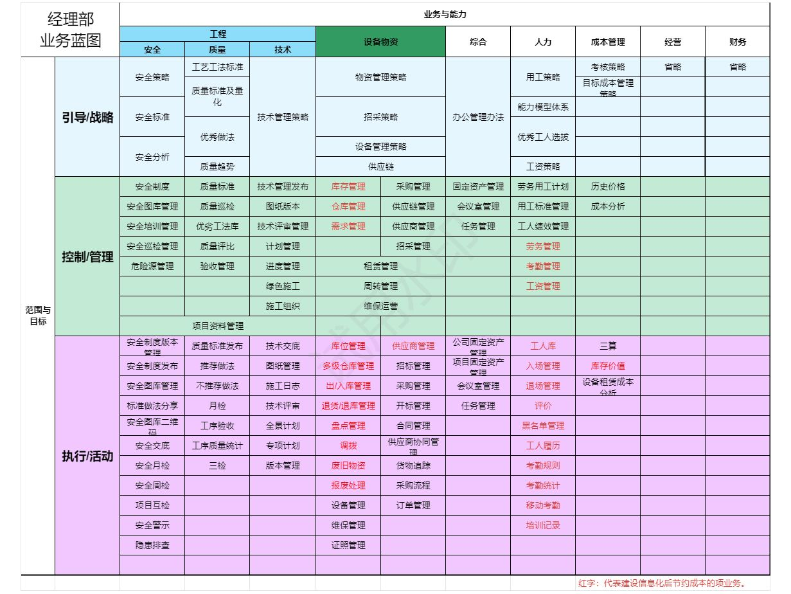
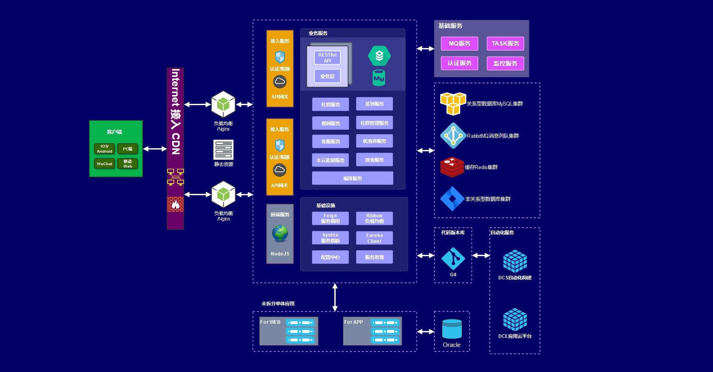

AXLTeco 智慧工地解决方案以数字化手段实现工地管理的精细化、智能化，已在拉各斯FIRS项目中成功应用并荣获住建部科技奖一等奖。
系统架构

智慧工地业务架构（来源：安信联智慧工地高阶设计）
核心模块
人员管理
实名制考勤、劳务实名制、工资监管、人员定位。
实名制考勤、劳务实名制、工资监管、人员定位。
安全管理
AI视频监控（安全帽/反光衣识别）、塔吊监测、深基坑监测、高支模监测。
AI视频监控（安全帽/反光衣识别）、塔吊监测、深基坑监测、高支模监测。
质量管理
质量巡检、隐蔽工程验收、材料进场验收、质量问题闭环。
质量巡检、隐蔽工程验收、材料进场验收、质量问题闭环。
进度管理
BIM进度模拟、节点预警、产值统计、工期分析。
BIM进度模拟、节点预警、产值统计、工期分析。
物料管理
材料进场登记、库存管理、消耗统计、供应商评价。
材料进场登记、库存管理、消耗统计、供应商评价。
绿色施工
扬尘监测、噪声监测、用水用电监测、喷淋联动控制。
扬尘监测、噪声监测、用水用电监测、喷淋联动控制。
应用架构

智慧工地应用架构（来源：安信联智慧工地高阶设计）
多端接入
系统支持微信小程序、PC Web、TV看板、APP、H5等多种终端接入，满足不同角色的使用需求。项目经理可通过PC端查看全局数据，监理人员可用手机APP现场巡检，管理层通过TV看板实时掌握项目动态。
项目成果
拉各斯联邦税务局智慧工地管理系统荣获中国住房和城乡建设部科学技术奖一等奖，充分体现了公司在建筑智能化及大型工程项目中的专业实力。